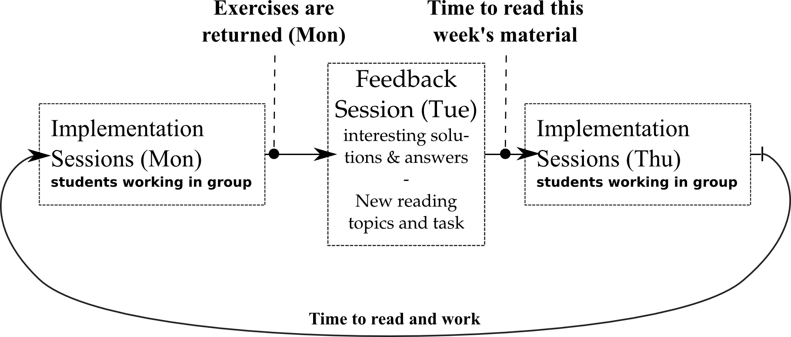

Main course targets
- Learn generalizable techniques and skills, and not …
- Specific APIs
- Specific programming languages
- Certain platforms
- …
- Basics of services
- which are just a part of SOA
- Basics of Cloud computing

Autumn 2014
To be added: Split the commits over the participating students.
 Michael (Michael Cochez)
Michael (Michael Cochez)
PhD student at MIT department
A service comprises a stand-alone unit of functionality available via a formally defined interface.
Services should follow the following principles
Only 8 weeks
5-10 credits (= 135-270 hours)
+ ————-
=Very intensive
You are expected to work outside of the lecture times!

In theory, there is no difference between theory and practice. In practice, there is.
– Attributed to Jan L. A. van de Snepscheut
Short demo of TCP and HTTP